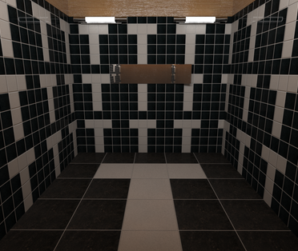

Internship
Florida Institute for Human & Machine
Pavel Janečka / pavel.janecka@uhk.cz
Background
UHK FIM
Bachelor's degree ('07), Master's degree ('09)
PhD (in progress)
Focus on advanced (challenging) programming solutions or/and computer graphics
Experiences
12+ years application development
(8+ commercial)
Wide programming language and scientific fields range
Bachelor's thesis
Monitoring and evaluation of user’s behavior in virtual 3D scene created by VRML language
Human cognitive and mental map research


Perimeter test reader
Cooperation with Charles Univerzity in HK
Application reads and visualize data from Perimiter M700


KASS
(KASS Another Statistics Software)
Tool for statistical testing of random generators with focus on educational purposes


The end

- 